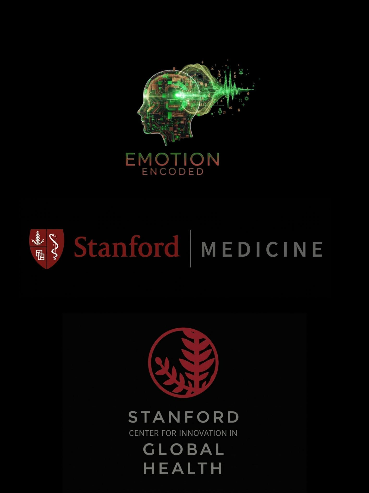

Pictures of Me
What I Accomplished At Ages 24-25
I was born and raised on a tiny Caribbean twin island of just 48,000 people. This is also where I achieved my accomplishments.
After eight (8) months of conducting independent research with the Emotion Encoded initiative, I was invited by the Stanford School of Medicine to integrate my findings into their Global AI Implementation Curriculum. This partnership formally incorporates my proprietary Caribbean physician insights into Stanford’s global open access curriculum, helping to address a critical data gap and establishing a permanent case study for clinical AI implementation.
Emotion Encoded
Independent Research Initiative • Founder & Principal Researcher • June 2025 – Present • St. Kitts & Nevis
- Independently conceptualized, designed, and executed mixed-methods studies (N≈160+) investigating how emotional reasoning, heuristics, metacognition, and cognitive bias drive psychological resistance to Artificial Intelligence in high-stakes fields (medicine, law, finance) in the Caribbean. Findings from logistic regression modeling (Python, using pandas, matplotlib, seaborn) revealed agency bias, metacognitive dissonance, and affective heuristics as dominant predictors of AI trust (OR=2.96, trend-level significance).
- Research findings were formally cited in a Ministry of Education national policy proposal on digital literacy and AI ethics, potentially impacting over 3,000 students.
- Conducted an extensive professional interview series (N≈45+), performing thematic and semantic analyses of experts, including surgeons, anesthesiologists, oncologists, radiologists, cardiologists, founders of tele-health and behavioural science startups, physicians in internal medicine, attorneys-at-law, a biomedical engineering professor of Johns Hopkins University, and psychologists in Caribbean region to identify conditional acceptance, accountability ambiguity, and perceived threat to expertise as core cognitive-emotional barriers to professional AI adoption.
- Preprint on PsyArXiv: Independent research paper, "The Cognitive Foundations of Algorithmic Trust: Human Reasoning in High-Stakes AI Systems," accepted and available on the psychology preprint server.
- Authored and published 60+ open-access briefs (e.g., “AI Therapists vs. Financial Advisors: Cognitive-Emotional Divides in Trust”) on website fostering public literacy on decoding emotional barriers to AI adoption.
Stanford Medicine x Emotion Encoded
Stanford University School of Medicine | Global Health Innovation | Research Collaborative Partnership & Co Author | March 2026 – Present

- Invited by Stanford School of Medicine to incorporate Emotion Encoded’s proprietary Caribbean physician insights into Stanford’s Global AI Implementation Curriculum on clinicians using AI, having been formally requested by faculty, filling a critical regional data gap.
- Collaborative Partnership: facilitating the integration and adoption of Emotion Encoded’s research findings into the curriculum to establish a permanent case study for AI implementation, promoting Curriculm to different medical institutions, Departments of Health and Ministries.
- Providing localized qualitative datasets and thematic analyses to architect frameworks for calibrating human-AI trust among medical specialists.
- Co-authoring a first-author peer-reviewed manuscript with Stanford faculty on Caribbean physician perspectives on clinical AI trust.